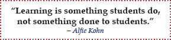

The 5Ps — the five phases of learning — and the 4 steps within each of the 5Ps guide your thought processes as you’re learning. Together, they provide a flexible, meaningful, and systematic approach to cultivating:
The foundation of CLM is based on the premise that you learn best when you think about what you’re learning. This sounds obvious, but many college students are still simply memorizing bits of information.
The quality of thinking, in turn, is determined by the quality of the key questions you ask and attempt to answer as you’re learning. When you’re not asking key questions, your mind wanders, your thoughts scatter, and you can’t identify key concepts essential to your understanding of the subject material.
CLM’s power lies in its ability to make large amounts of information manageable through the 5Ps process and in helping you visually map that information. Mapping allows for better organization and clearer connections so you can think better and probe more. With time, CLM becomes intuitive and second nature, fostering your lifelong thinking and learning.
Visual maps are an integral part of CLM. They help you consolidate the most important information (key concepts) from numerous class-related materials into one place and reflect your understanding of the information in the class materials. You’ll no longer need to sort through various notebooks, textbooks, handouts, and loose pieces of paper to find that lost piece of information.
More importantly, visual maps take advantage of the hierarchical levels of information both in your brain and within course material texts. This allows you to form an initial outline of the main ideas of the subject you’re learning, followed by a subsequent addition of key concepts and supporting details to further structure the information as you advance through the 5Ps.
With CLM, you don’t have to “get it all” at once. Rather, you’re gradually learning the material through an iterative and constructive process, which is also helping you identify what’s important, why it’s important, and what else is missing.
Visual maps are so powerful and work so well because they are based on memory principles that help you learn and retain new information. They are effective because they:
As you’ll see in Chapter 2, drawing visual maps is very easy and even fun. In fact, you don’t even have to draw; the computer does the drawing. There are many free programs you can download and start using immediately. Visual maps can be used in a variety of settings and by everyone from children in kindergarten to college students to business professionals. Don’t worry; everyone has visual thinking ability, including you. The problem is that most of us have never been encouraged to develop our intrinsic ability to think visually.
The 5 phases of CLM are:
After every phase and before the start of the next phase, you should be able to mentally recreate, accurately and completely, the entire visual map up to the point where you left off. This serves as a review of what you did, improves your memory and recall, and prepares you for the next phase.
You may place different emphasis on the different phases, but you’ll benefit most when you fully engage in all five phases of CLM.
Within each phase, the 4 following steps encourage active interaction and dialogue between the course materials, your visual map, and your thinking.
Nobody can teach you better than you can teach yourself because only you know what works best for you. Once you realize that you’re in charge of your learning, you’re liberated, empowered, and engaged. When you no longer blame your teachers and parents for your failures, you have no choice but to take matters into your own hands. With self-control and self-direction, you start to think for yourself and the learning process becomes entirely yours, fed by information from everywhere. Seeing the results you’ve achieved under your own leadership is both rewarding and motivating.

Now that you realize that you’re the driver in your learning process, you must figure out how you want to drive. If there’s one characteristic that separates the leaders from the followers and the successful from the unsuccessful, it is curiosity. It’s curiosity that made Albert Einstein the creative genius we all admire. It’s the curious thinker who will ask the right questions and find new solutions. If you’re not curious, then you’re not asking yourself questions. If you’re not asking yourself questions, then you’re satisfied with just getting by. If you want to be an outstanding learner, you must develop a curious mind. Curiosity and problem solving are an integral part of CLM, because CLM requires you to constantly ask new questions in an attempt to get the missing details (concepts) and connections needed to grasp the big picture. By becoming engaged, rather than simply reading and listening, you’re actively learning.
A very important quality of any learning method is that it be sustainable. The method must be simple enough and effective enough to be used throughout your college education and even after college. A simple study method such as cramming is not sustainable because you’re just memorizing information for an exam and that information will “disappear” within a few days. A complicated and cumbersome method will be abandoned a week into the semester. That’s why CLM was trimmed to include only the essential elements — the 5Ps and 4 steps — that add real value to your learning and your grades. With CLM, you’re assured of a consistent approach and sustainable results.
We’re living in an age where the known and established constantly gets replaced by the new. Pen-and-paper note taking in this environment is too slow and outdated.
For a learning method to be worth anything, it must be dynamic and able to accommodate changes in information and changes in your thinking. The flexibility inherent in CLM makes changes possible within seconds, without getting in the way of your thinking. CLM’s dynamic framework can easily accommodate individual preferences and encourages fine-tuning to make it personal and meaningful.
Let’s start first with the obvious benefit of CLM: efficiency. It’s not the effort you put in that you get graded on; rather, it’s what you know and your ability to apply and communicate what you know. Therefore, an effective learning method should deliver the same or better results but cut down on the effort and time required to deliver those results. Two independent studies showed that utilizing visual mapping software can help you increase your productivity by up to 20 percent, the equivalent of gaining back an extra day to invest in other college activities.4 With CLM, you only do things once (never repeating a task) because everything you do in CLM has a learning purpose. Furthermore, with CLM you don’t have to read or write everything; rather, you’re only distilling and integrating important concepts. This, in turn, saves you lots of time and effort, while still delivering outstanding learning results.
With CLM, not only are you doing things right, saving you time and effort, but you’re also doing the right thing: effectively learning. Simple memorization might work in high school for some subjects, but it will hardly ever work in college. Meaningful learning is required to do well on college exams. Your old study methods, including memorization, won’t help you with the testing tasks commonly employed by college instructors:
With CLM, those testing tasks are not a problem, because you’ll be doing those exact tasks and more during your learning process.
As a result of CLM:
As you can see, CLM is easy and can be applied immediately. CLM is discussed in more detail in Chapter 3.
CLM evolved over many years. I started with the basic framework of this method during my MBA studies at Zicklin School of Business from 2001–2003. Having a chemistry background, rather than the business background of my classmates, I had to find a way to synthesize and learn vast amounts of graduate material while still learning the background material on which these graduate courses were based. The tool that proved tremendously valuable was visual mapping, which I still use today in everything that I do (including writing this book).
For me, visual mapping was an amazing improvement over plain text and linear thinking; it vastly improved my ability to learn, think, and communicate important concepts and ideas. Suddenly, I was able to visualize multiple connections and pathways. Once you try it, you’ll recognize the amazing power visual maps have to facilitate and enhance understanding and learning.
While attending the business school, I also taught chemistry as an adjunct professor at a local community college in New York, where I took the visual mapping tool and applied it to my chemistry classes. It worked wonderfully, but it wasn’t enough in itself to provide a complete learning method for students. That’s when I developed an early version of the 5Ps learning process and eventually merged it with visual mapping to create the CLM.
I spent subsequent years putting CLM into practice and fine-tuning the method. I kept what worked and improved upon or discarded what didn’t. This didn’t happen in a vacuum. I had plenty of help from my students and their friends who tested CLM in real-life learning situations. Although CLM started intuitively, it’s been thoroughly validated over the years by the harshest critics — students themselves. These days, students everywhere are using CLM with much success.
The remainder of this section discusses three aspects of cognitive psychology that support CLM. Skip to Section 1.5 if you’re not interested in the cognitive psychology of learning.
After I started fine-tuning CLM, I decided to research connections between CLM and cognitive psychology to discover why CLM worked so well. Connections quickly became obvious.
In cognitive psychology, psychologists frequently use IPM to explain how we receive, process, and learn information. According to IPM, memory is divided into three storage systems (see diagram below):